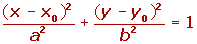
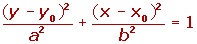

Resumen de elipse
Resumen de elipse
- Elementos
- Excentricidad
- Ecuación reducida
- Elipse reducida OY
- Ecuación elipse
- Ecuación elipse OY
Elementos de la elipse
Es el lugar geométrico de los puntos del plano cuya suma de distancias a dos puntos fijos llamados focos es constante.
Elementos de la elipse:
1Focos: Son los puntos fijos F y F'.
2Eje focal: Es la recta que pasa por los focos.
3Eje secundario: Es la mediatriz del segmento FF'.
4Centro: Es el punto de intersección de los ejes.
5Radios vectores: Son los segmentos que van desde un punto de la elipse a los focos: PF y PF'.
6Distancia focal: Es el segmento  de longitud 2c, c es el valor de la semidistancia focal.
de longitud 2c, c es el valor de la semidistancia focal.
7Vértices: Son los puntos de intersección de la elipse con los ejes: A, A', B y B'.
8Eje mayor: Es el segmento  de longitud 2a, a es el valor del semieje mayor.
de longitud 2a, a es el valor del semieje mayor.
9Eje menor:Es el segmento  de longitud 2b, b es el valor del semieje menor.
de longitud 2b, b es el valor del semieje menor.
10Ejes de simetría: Son las rectas que contienen al eje mayor o al eje menor.
11Centro de simetría: Coincide con el centro de la elipse, que es el punto de intersección de los ejes de simetría.
Relación entre la distancia focal y los semiejes
Excentricidad
Es un número que mide en mayor o menor achatamiento de la elipse. Y es igual al cociente entre su semidistancia focal y su semieje mayor.
Ecuación reducida
Si el eje principal está en el de abscisas se obtendrá la siguiente ecuación:
Las coordenadas de los focos son:
F'(−c, 0) y F(c, 0)
Elipse con los focos en el eje OY
Si el eje principal está en el de ordenadas se obtendrá la siguiente ecuación:

Las coordenadas de los focos son:
F'(0, −c) y F(0, c)
Elipse con eje paralelos a OX y centro distinto al origen
Si el centro de la elipse C(x0,y0) y el eje principal es paralelo a OX, los focos tienen de coordenadas F(X0+c, y0) y F'(X0-c, y0). Y la ecuación de la elipse será:

Al quitar denominadores y desarrollar las ecuaciones se obtiene, en general, una ecuación de la forma:

Donde A y B tienen el mismo signo.
Elipse con eje paralelo a OY y centro distinto al origen
Si el centro de la elipse C(x0,y0) y el eje principal es paralelo a OY, los focos tienen de coordenadas F(X0, y+c) y F'(X0, y0−c). Y la ecuación de la elipse será:

Al quitar denominadores y desarrollar las ecuaciones se obtiene, en general, una ecuación de la forma:

Donde A y B tienen el mismo signo.